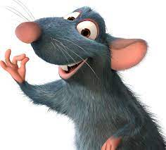
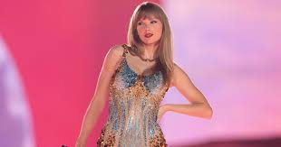
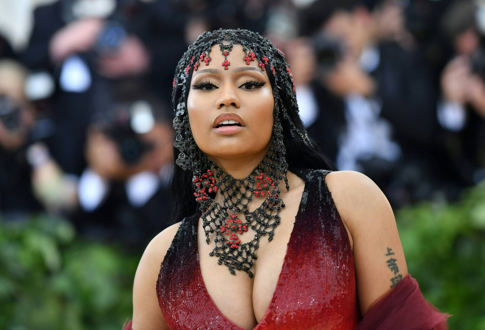

Como un mini resumen, Taylor Swift es una aclamada cantante y compositora estadounidense con una impresionante discografía que abarca diversos géneros musicales. Su carrera comenzó en el mundo de la música country con su álbum debut homónimo en 2006, que incluía éxitos como "Teardrops on My Guitar" y "Our Song". Con letras sinceras y emotivas, Swift cautivó al público y se convirtió en una sensación en el país.
A lo largo de los años, Taylor Swift ha demostrado su versatilidad artística y ha explorado diferentes estilos en su música. Su álbum "Red" lanzado en 2012, marcó un punto de inflexión en su carrera al incorporar elementos del pop en su sonido. El álbum incluye hits como "We Are Never Ever Getting Back Together" y "I Knew You Were Trouble", mostrando una faceta más madura.
Desde entonces, ha seguido evolucionando su estilo y sorprendiendo a los fanáticos con álbumes como "1989", "Reputation" y "Lover", consolidándose como una de las artistas más influyentes y exitosas de la industria musical.
| Nombre | Imagen | Razón |
| Remy de Ratatouille |  | La principal razón es más que nada porque desde que vi por primera vez la película, como que sentí esa motivación de seguir hasta lograr no importa tu posición |
| Taylor Swift |  | Cómo tal no es personaje de película pero es una persona que me ha inspirado a lo largo de los años (para ser específicos desde 2010) y más que nada me motiva a seguir adelante no importa lo que pase porque gracias a ella sé que todo se puede resolver |
| Nicki Minaj |  | Nicki es una persona que tienes que conocer todo su transfondo, porque a veces la gente piensa que es una persona millonaria egoísta, pero no es así, ella tuvo que pasar por mucho para llegar a donde está y por eso es que soy su admirador |